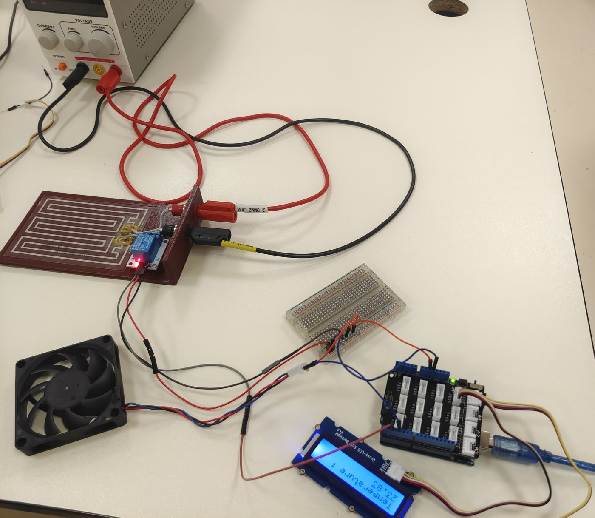
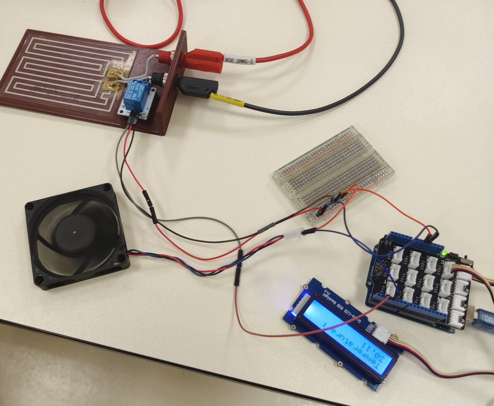
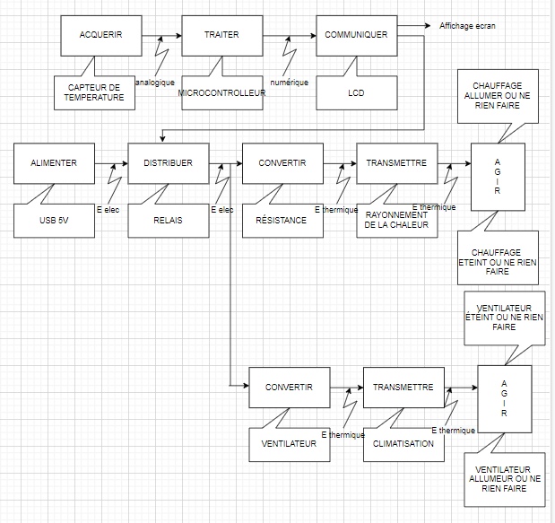
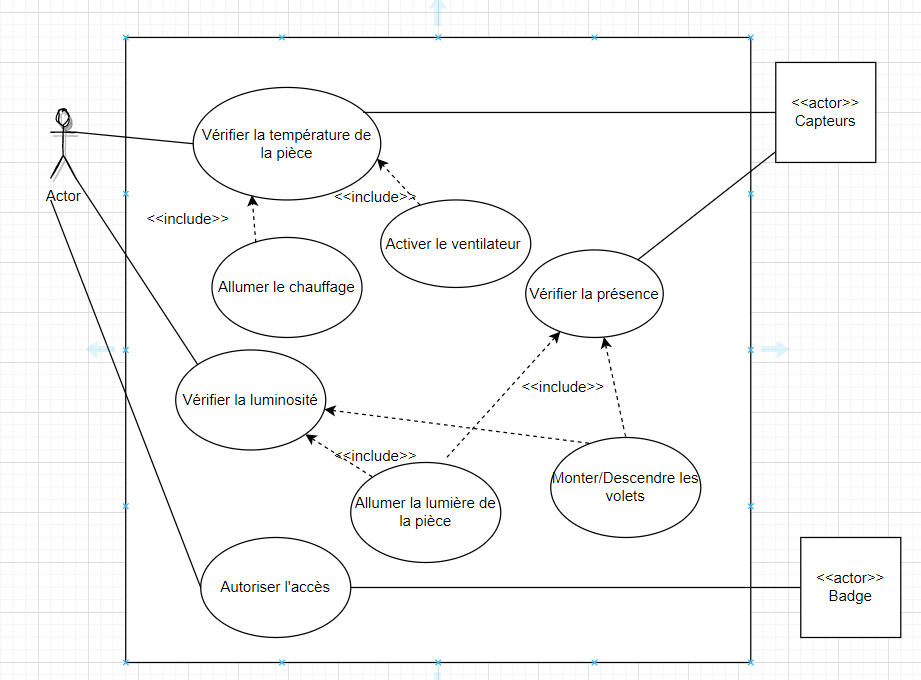
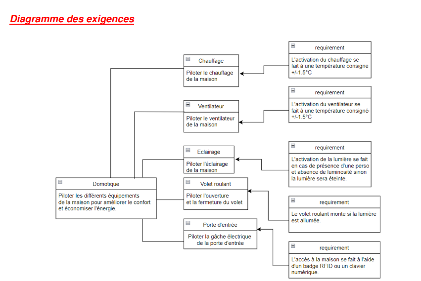
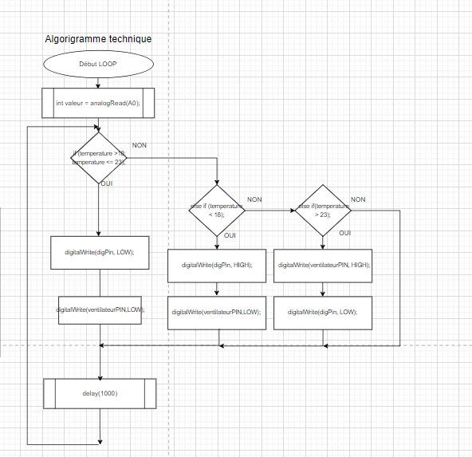

Démo · projet STI2D SIN, terminale (novembre 2022)
Programme de 2022 (porté ligne à ligne)
Version corrigée en 2026
pièce, programme 2022pièce, version 2026extérieurbandes : seuils de 26 et 30 °C
sorties : chauffage (haut) et ventilateur (bas), 2022 puis 2026





